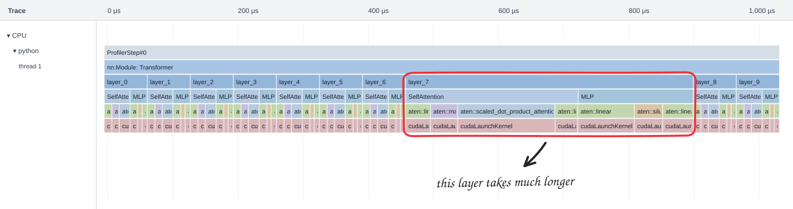
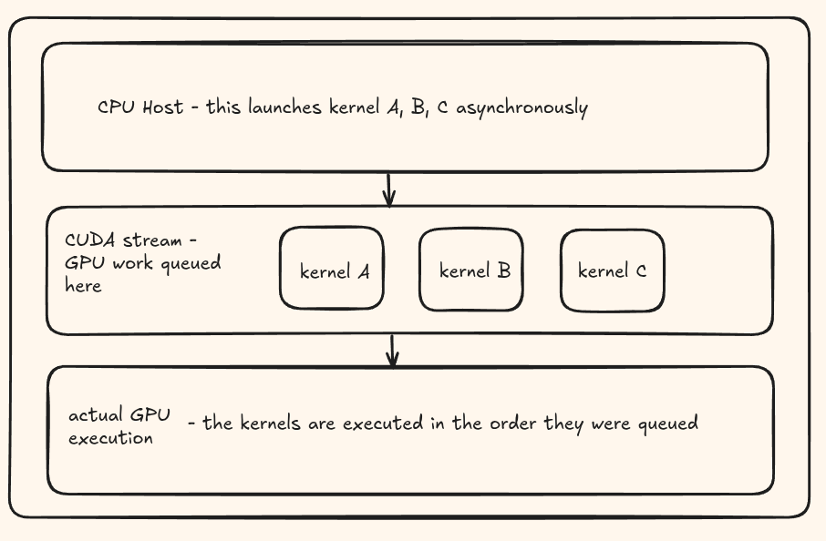
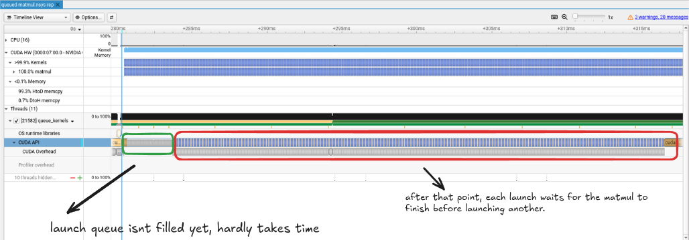

Imagine you have a transformer with 10 layers. Every layer has the same structure, the same tensor shapes, and launches the same sequence of kernels. You open the profiler expecting to see the same pattern repeating 10 times. But one layer seems to be significantly more expensive than the others. I mean what happened here?

This is super weird considering everything is identical and there shouldn't really be a reason for one layer to be taking this long right?
Keep reading, and I'll show you what I found.
What happens when we launch a kernel?
A CUDA kernel launch is asynchronous with respect to the CPU. This means the CPU submits the work and can continue to do other things while the GPU executes it. A CUDA stream is what gives those operations an order. In the usual single-stream case, the next kernel executes after the earlier work in that stream. This is the behavior described in the CUDA asynchronous execution guide.

For a transformer, this means the CPU can submit the operations for layer 2 while the GPU is still working on layer 1. Layer 2 needs layer 1's output, but the CPU does not need to read that output to enqueue the next operation. Keeping the dependent operations on the same stream preserves their execution order.
Cool, but quick question, can I keep adding work forever into this queue? I would like to think there probably has to be a limit to how much work can be queued up right?
NVIDIA's runtime API documentation explicitly allows CUDA calls to block when internal resources are unavailable or contended. So asynchronous execution does not guarantee that every launch call returns quickly under every condition. Once submission runs out of room, the host can wait inside the launch call until GPU progress makes room for more work. This is something we should pay attention to.
Trying this with the simplest possible experiment
To explore this on my RTX 4060 Ti, I used a naive 512 x 512 matmul and launched it repeatedly in the default stream. Every launch uses the same inputs, output buffer, grid and block dimensions. There is no allocation or memory copy inside the submission loop. All launches use one stream, so writing the same output buffer is ordered.
The kernel is intentionally simple and slow enough that the CPU can build a backlog. You can download the full CUDA source. The timing section looks like this:
// Warm up and finish that work before starting the timer.
matmul<<<blocks, threads>>>(a, b, c);
cudaDeviceSynchronize();
const auto submit_start = std::chrono::steady_clock::now();
for (int i = 0; i < kernel_count; ++i) {
matmul<<<blocks, threads>>>(a, b, c);
}
const auto submit_end = std::chrono::steady_clock::now();
cudaDeviceSynchronize();
const auto finish = std::chrono::steady_clock::now();nvcc -O2 -lineinfo queue_kernels.cu -o queue_kernels
./queue_kernels 2000
nsys profile --trace=cuda,nvtx,osrt -o queue ./queue_kernels 2000
nsys stats queue.nsys-rep
nsys-ui queue.nsys-repThese are the host submission times recorded in my experiment:
| Kernels submitted | Host submission time |
|---|---|
| 1,000 | 1.74 ms |
| 1,030 | 1.78 ms |
| 1,050 | 5.46 ms |
| 1,100 | 15.24 ms |
| 1,200 | 36.70 ms |
| 2,000 | 202.68 ms |
Going from 1,000 to 1,030 launches barely changes the submission time. But going from 1,030 to 1,050 pushes it from 1.78 ms to 5.46 ms. That is the first obvious change in this table. Doubling the number of launches from 1,000 to 2,000 makes the host submission time more than 100 times larger.
100x? That is a massive slowdown.
Open your profiler

If you check the CUDA API lane in the Nsight Systems trace, you can see the same pattern. In the green region, the first 1,040 launches are short, but after that in the red region the launch calls stretch out.
The reason? After 1,040 launches, the queue has hit its limit. This means that for the next launches, the CPU has to wait for the GPU to finish some of its work before it can submit more kernels!
This probably does not mean there is an exact queue capacity of 1,040 kernels. Some kernels have already completed by the time that many launches have been submitted. The trace does not expose the exact internal buffer that filled, either. I would treat this as an observed threshold for this workload and setup, not a CUDA constant to hardcode.
Closing thoughts
This was a fun little experiment that helped me understand there are still some nuances and limits to consider when launching multiple CUDA kernels at once.
I also have a follow up to this question, so what happens if we launch kernels in multiple streams? I will try to explore that in a future post!